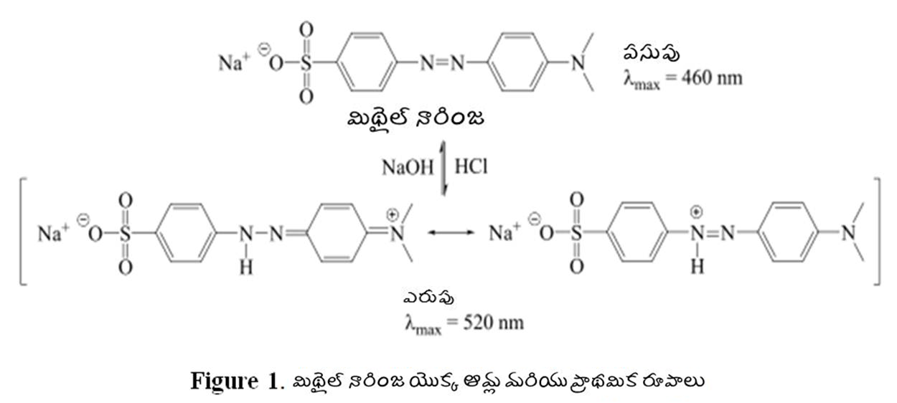

కెమికల్ సైన్సెస్
→
మాలిక్యులర్ శోషణ స్పెక్ట్రోస్కోపీ ల్యాబ్
→
ప్రయోగాల జాబితా
శోషణ స్పెక్ట్రాపై pH ప్రభావాలు: స్పెక్ట్రోఫోటోమెట్రిక్ పద్ధతి ద్వారా pKa నిర్ణయం
ఒక అణువుకు ఆమ్లం / బేస్ పాత్ర ఉంటే, ద్రావణం యొక్క pH లో మార్పు అణువు యొక్క శోషణ స్పెక్ట్రాపై ముఖ్యమైన ప్రభావాన్ని చూపుతుంది. PH లేదా H. + అయాన్ గా ration త కంజుగేట్ యాసిడ్-బేస్ జత రసాయన సమతుల్యతను ప్రభావితం చేస్తుంది. అందువల్ల ఒక ద్రావణంలో pH మార్పు ఒక ద్రావణంలో ఉన్న జాతుల సంఖ్య మరియు రకాల (అణువులు లేదా అయాన్లు) మార్పుకు దారితీస్తుంది. మిథైల్ ఆరెంజ్ యొక్క ఉదాహరణ తీసుకుందాం. మిథైల్ ఆరెంజ్ ఒక అజో డై (R N = N Rꞌ) (మూర్తి 1), ఇక్కడ N = N డబుల్ బాండ్ మరియు పొరుగు ఆరిల్ సమూహాల నుండి ఎలక్ట్రాన్లు పసుపు రంగుకు కారణమయ్యే క్రోమోఫోర్ను కలిగి ఉంటాయి. మిథైల్ నారింజ బలహీనమైన స్థావరంగా పనిచేస్తుంది మరియు అధిక ఆమ్ల ద్రావణంలో ప్రోటోనేట్ అవుతుంది. ప్రోటాన్ N = N డబుల్ బాండ్లోని నత్రజనిలో ఒకదానితో బంధిస్తుంది, ఇది డబుల్ బంధాన్ని విచ్ఛిన్నం చేస్తుంది. ఇది అణువులోని ఎలక్ట్రాన్ / బాండ్ అమరికకు దారితీస్తుంది. అందువల్ల, ఆమ్ల మాధ్యమంలో ప్రామాణిక మిథైల్ ఆరెంజ్ యొక్క పరమాణు నిర్మాణం మరియు క్రోమోఫోర్ మార్పు, ఇది ద్రావణంలో ఎరుపు రంగుకు దారితీస్తుంది.

సౌలభ్యం కోసం మిథైల్ నారింజను “ఇన్” గా సూచిద్దాం మరియు పై అయానిక్ సమతుల్యతను ఈ క్రింది విధంగా వ్రాద్దాం:

ఎక్కడ ది ఒక ఆమ్ల విచ్ఛేదనం స్థిరాంకం. బలహీనమైన ఆమ్లాలు లేదా స్థావరాలు అయిన యాసిడ్-బేస్ సూచికలు పూర్తి విచ్ఛేదనం చేయవు మరియు ఈ రకమైన డిస్సోసియేషన్ సమతుల్యతను ప్రదర్శిస్తాయి. H ను మార్చడం ద్వారా సమతుల్యతను వెనుకకు లేదా ముందుకు నడిపించవచ్చు 3 ది + ద్రావణంలో అయాన్ గా ration త.
ఆచరణలో, pH మరియు pK ఒక తరచుగా H స్థానంలో ఉపయోగిస్తారు 3 ది + అయాన్ గా ration త మరియు K. ఒక వరుసగా. అందువల్ల, లోగరిథం యొక్క ప్రతికూలతను తీసుకోవడం ద్వారా, సమీకరణం (1) నుండి వ్రాయవచ్చు,
PK ఒక = pH - లాగ్ ([In] / [InH + ]) (2)
లేదా, pH = pK ఒక + log ([In] / [InH +]) (3)
ఇక్కడ ‘[]’ పరివేష్టిత జాతుల ఏకాగ్రతను సూచిస్తుంది. Eq (3) p K అని సూచిస్తుంది ఒక ఇచ్చిన pH వద్ద కంజుగేట్ ఆమ్లం మరియు బేస్ జత యొక్క సాంద్రతలు తెలిస్తే విలువను లెక్కించవచ్చు. గణితశాస్త్రంలో eq. (3) అంతరాయం = pK తో సరళ రేఖ సమీకరణం (y = c + mx) ఒక pH లాగ్కు వ్యతిరేకంగా ప్లాట్ చేయబడితే ([In] / [InH +]). మరో మాటలో చెప్పాలంటే, లాగ్ చేసినప్పుడు ([In] / [InH +]) = 0, అనగా, [In] = [InH +] వద్ద, pH = pK ఒక . అందువలన, పి.కె. ఒక [In] / [InH +] నిష్పత్తిని pH (ఫంక్షన్ 2) గా నిర్ణయించడం ద్వారా సౌకర్యవంతంగా గ్రాఫికల్గా నిర్ణయించబడుతుంది.

మిథైల్ నారింజ యొక్క ప్రామాణిక మరియు ప్రోటోనేటెడ్ రూపాలు రెండూ రంగు జాతులు; అందువల్ల స్పెక్ట్రోఫోటోమీటర్ సహాయంతో గరిష్ట శోషణల తరంగదైర్ఘ్యాల వద్ద శోషణలను కొలవడం ద్వారా వాటి సాంద్రతలను సౌకర్యవంతంగా నిర్ణయించవచ్చు. ఇది pK యొక్క స్పెక్ట్రోఫోటోమెట్రిక్ నిర్ణయాన్ని అనుమతిస్తుంది ఒక మిథైల్ ఆరెంజ్ విషయంలో. బీర్-లాంబెర్ట్ చట్టం ప్రకారం, ఇచ్చిన తరంగదైర్ఘ్యం వద్ద ఒక ద్రావకం ద్వారా గ్రహించిన కాంతి పరిమాణం దాని మోలార్ గా ration తకు అనులోమానుపాతంలో ఉంటుంది:
A = .cl , ఇక్కడ A = శోషణ, శోషక అణువు యొక్క mo = మోలార్ శోషణ (స్థిరమైన) లక్షణం, కాంతి శోషణ యొక్క l = మార్గం పొడవు, కాంతి శోషక అణువు యొక్క సాంద్రత. మిశ్రమంలో, రెండు శోషక జాతుల శోషణ, ఇన్హెచ్ + మరియు లో, ఒక నిర్దిష్ట తరంగదైర్ఘ్యం వద్ద InH యొక్క శోషణల మొత్తం + మరియు ఆ తరంగదైర్ఘ్యం వద్ద. InH యొక్క సాంద్రతలు + మరియు మిశ్రమంలో రెండు వేర్వేరు తరంగదైర్ఘ్యాల వద్ద మిశ్రమం యొక్క శోషణను కొలవడం ద్వారా నిర్ణయించవచ్చు (చెప్పండి, 1 మరియు 2 ) మరియు రెండు తరంగదైర్ఘ్యాల వద్ద రెండు భాగాల కోసం మోలార్ శోషణలను (అమరిక వక్రాల ద్వారా) పొందడం ద్వారా. సాధారణంగా, తరంగదైర్ఘ్యాలు ఎన్నుకోబడతాయి, తద్వారా రెండు జాతుల శోషణల మధ్య నిష్పత్తులు, A. INH + / A లో , గరిష్టీకరించబడతాయి మరియు తగ్గించబడతాయి. ఈ విధంగా రెండు తెలియని రెండు స్వతంత్ర సమీకరణాలను నిర్మించవచ్చు, [InH + ] మరియు [ఇన్].
అ (మ 1 ) = ఎ INH + (λ1) + ఎ. లో (λ1) = ఇ INH + (L1) [InH +] + ఇ లో (λ1) [లో] (4)
అ (మ 2 ) = ఎ INH + (λ2) + ఎ. లో (2) = ఇ INH + (? 2) [InH +] + ఇ లో (λ2) [లో] (5)
ఇక్కడ ఇ INH + (Λi) మరియు లో (λi) InH యొక్క మోలార్ శోషకత + మరియు వరుసగా, at వద్ద నేను యూనిట్ మార్గం పొడవు కోసం. ఒకరు [InH + పై రెండు సమీకరణాలను పరిష్కరించడం ద్వారా] మరియు [లో]. ఏదేమైనా, ఈ పద్ధతిని ఉపయోగించడానికి మిశ్రమానికి మరియు వ్యక్తిగత జాతులకు వేర్వేరు పిహెచ్ విలువలతో బహుళ-తరంగదైర్ఘ్యం శోషణ కొలతలు అవసరం. యాసిడ్-బేస్ సమతుల్యత రెండు అయనీకరణ దశలను కలిగి ఉంటే ఈ పద్ధతి ముఖ్యంగా అవసరం. మిశ్రమం మరియు వ్యక్తిగత జాతుల కోసం బహుళ-తరంగదైర్ఘ్యం శోషణ కొలతలు eq లో ఉన్నట్లుగా ఒకే అయనీకరణ దశను కలిగి ఉన్న వ్యవస్థలకు నివారించవచ్చు. (1).
Eq యొక్క పరీక్ష. (3) నిష్పత్తి [In] / [InH ని నిర్ణయించాల్సిన అవసరం ఉందని చూపిస్తుంది + ] ఒక ఫంక్షన్ pH గా, వ్యక్తిగత జాతుల ఏకాగ్రత కాదు. మిథైల్ ఆరెంజ్ సూచిక యొక్క స్థిరమైన పరిమాణం అన్ని pH విలువలలో ఉపయోగించబడుతుంది కాబట్టి, సూచిక యొక్క మొత్తం గా ration త C చే ఇవ్వబడుతుంది T = [లో] బి = [InH + ] ఒక = [In] + [InH + ], ఎక్కడ [లో] బి = అధిక pH వద్ద ఉన్న ఇన్ (సూచిక యొక్క మూల రూపం) మరియు [InH + ] ఒక = InH యొక్క ఏకాగ్రత + (సూచిక యొక్క ఆమ్ల రూపం) తక్కువ pH వద్ద ఉంటుంది. In మరియు InH యొక్క సాపేక్ష పరిమాణాలు + ద్రావణం యొక్క pH ని బట్టి పై రెండు విపరీతాల మధ్య మారుతుంది. రెండు విపరీత పరిస్థితుల కోసం శోషణ విలువలను కొలిస్తే ([లో] బి మరియు [InH + ] ఒక ) ఇచ్చిన తరంగదైర్ఘ్యం వద్ద, అన్ని ఇతర శోషణ విలువలు వాటి మధ్య ఉంటాయి. ఇది అన్ని పిహెచ్ విలువలతో ఉన్న ప్రతి జాతి యొక్క సాపేక్ష మొత్తాన్ని నిర్ణయించడానికి ఒకరిని అనుమతిస్తుంది. శోషణ కొలత యొక్క తరంగదైర్ఘ్యానికి ఉత్తమ ఎంపిక ఏమిటంటే, రెండు జాతుల శోషణలో అతిపెద్ద వ్యత్యాసం ఉంది. మిథైల్ ఆరెంజ్ ఇండికేటర్ సిస్టమ్ విషయంలో, దీనిని గమనించిన తరంగదైర్ఘ్యం is గరిష్టంగా InH కోసం + (సే, INH + l గరిష్టంగా 510 ఎన్ఎమ్). ఈ వద్ద అనుకుందాం INH + l గరిష్టంగా :
ఒక ఒక [InH కోసం శోషణ + ] ఒక
ఒక బి [లో] కోసం శోషణ బి
ఏదైనా ఇంటర్మీడియట్ pH విలువలకు A = శోషణ
ఈ పరిస్థితులలో,
అ = ఎ ఒక × [InH + ] / సి T + ఎ బి × [ఇన్] / సి T (6)
నిష్పత్తిని కనుగొనడానికి పై సంబంధాన్ని పునర్వ్యవస్థీకరించవచ్చు, [In] / [InH + ], వద్ద INH + l గరిష్టంగా ఈ క్రింది విధంగా:
[లో] / [చ.కిమీ + ] = (ఎ ఒక –అ) / (ఎ - ఎ బి ) (7)
అందువల్ల, ప్రయోగం సర్దుబాటు అవుతుందని తేలుతుంది [H. 3 ది + ] లేదా పిహెచ్ రెండు విపరీతాలతో సహా తెలిసిన విలువలకు మరియు నిష్పత్తిని నిర్ణయించడానికి సంబంధిత శోషణ విలువలను కొలుస్తుంది [In] / [InH + ] స్పెక్ట్రోఫోటోమెట్రిక్గా. ప్రయోగాత్మక పరిష్కారాల యొక్క pH సాధారణంగా బఫర్ వ్యవస్థను ఉపయోగించడం ద్వారా మారుతూ ఉంటుంది. డిసోడియం హైడ్రోజన్ ఆర్థోఫాస్ఫేట్ (Na 2 HPO 4 ) -సిట్రిక్ యాసిడ్ బఫర్ సిస్టమ్ను మిథైల్ ఆరెంజ్ ఇండికేటర్ సిస్టమ్ కోసం ఉపయోగించవచ్చు. ఆదర్శవంతంగా, బఫర్ భాగాలు ఆసక్తి యొక్క తరంగదైర్ఘ్యం పరిధిలో ఏ కాంతిని గ్రహించకూడదు. ఈ క్రింది అంశాలను గమనించాలి. బఫర్ భాగాల సాపేక్ష సాంద్రతలు pH ద్రావణాన్ని నియంత్రిస్తాయి మరియు పరిష్కారం pH సూచిక జాతుల సాపేక్ష సాంద్రతలను నియంత్రిస్తుంది, InH + మరియు లో. డిస్సోసియేషన్ సమతౌల్య స్థిరాంకం ( ది ఒక ) ప్రస్తుత స్పెక్ట్రోఫోటోమెట్రిక్ పద్ధతిలో కొలుస్తారు “ఏకాగ్రత సమతౌల్య స్థిరాంకం”, ఎందుకంటే “కార్యాచరణ” పదాలకు బదులుగా సాంద్రతలు నిర్ణయాలకు ఉపయోగించబడతాయి. K ఒక అందువల్ల pK ఒక ఇతర సమతౌల్య స్థిరాంకాల మాదిరిగా విలువలు ఉష్ణోగ్రతపై ఆధారపడి ఉంటాయి.